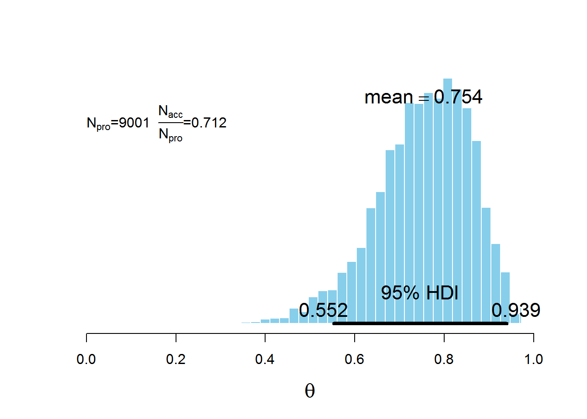
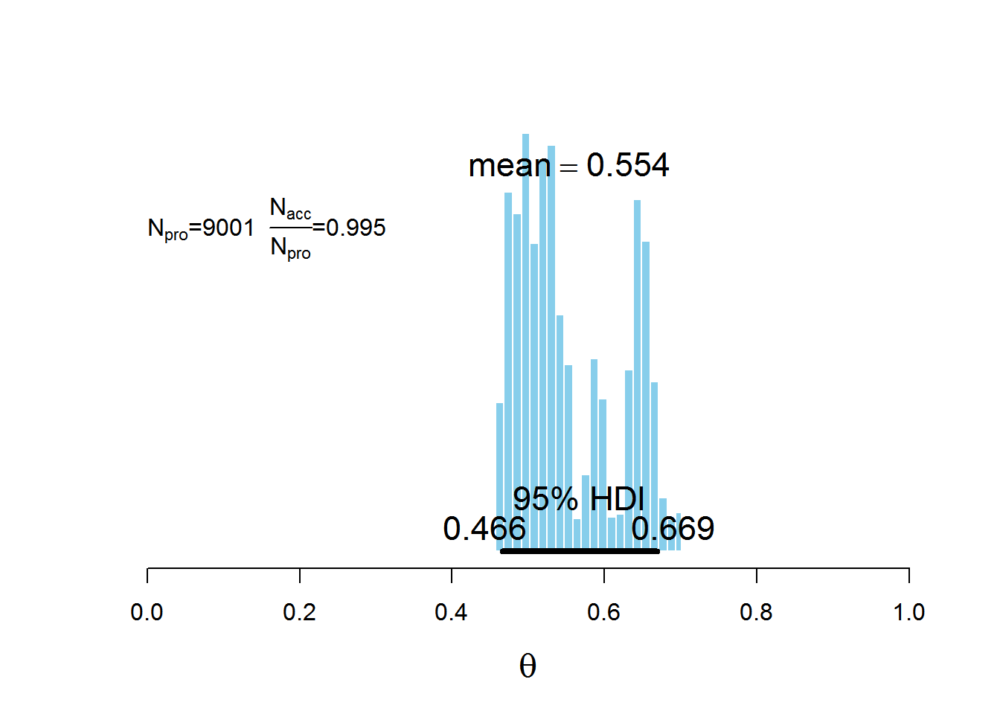
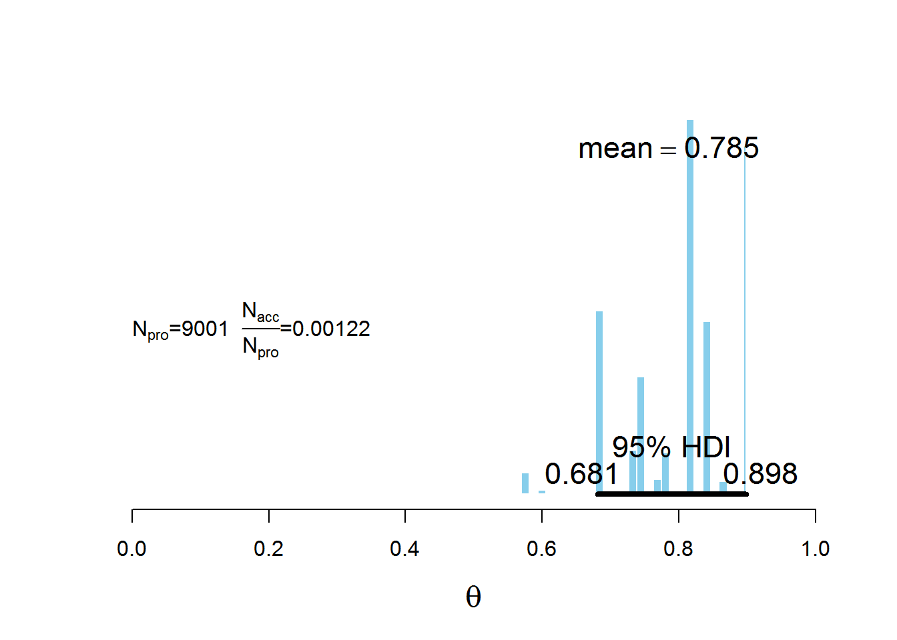
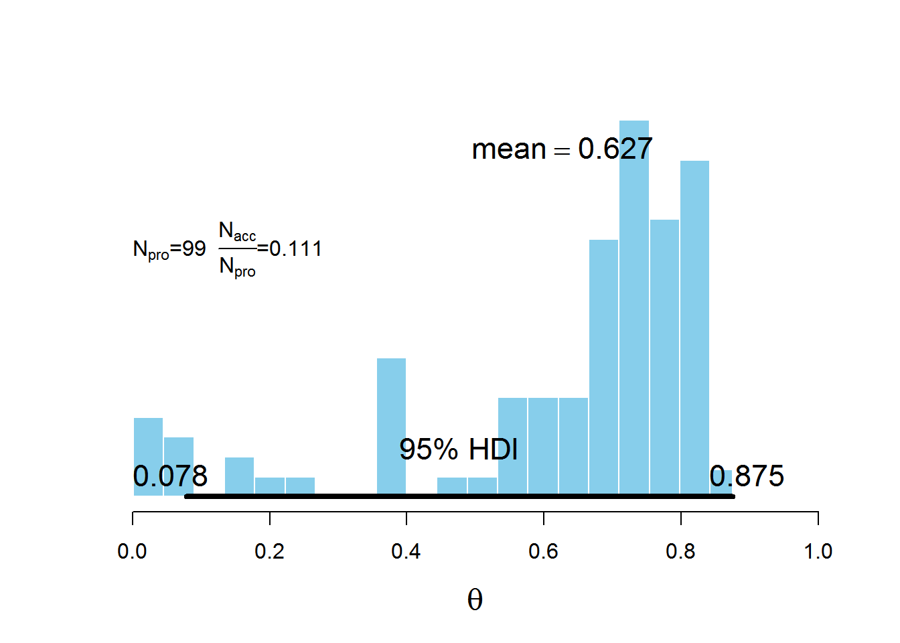

To see what happens in the Metropolis algorithm with different proposal distributions, and to get a sense how the proposal distribution must be tuned to the target distribution. Use the home-grown Metropolis algorithm in the R script BernMetropolisTemplate.R for this exercise.
The proposal distribution generates candidate jumps that are normally distributed with mean zero. Set the standard deviation of the proposal distribution to 0.1 and plot.
Set the standard deviation of the proposal distribution to 0.001 and plot.
Set the standard deviation of the proposal distribution to 100.0 and plot.
Example code for the plot below left:
myData <- c(1,1,1,1,1,1,1,1,1,1,1,0,0,0) # data
trajLength <- 10000 # number of jumps to try
trajectory <- rep(0, trajLength) # vector to store results
trajectory[1] <- 0.5 # start value
burnIn <- ceiling(0.1 * trajLength) # burn in number
nAccepted1 <- 0 # track no. of jumps accepted
nRejected1 <- 0 # track no. of jumps rejected
stdev1 <- 0.1 # standard deviation
for(t in 1:(trajLength)) {
currentPosition <- trajectory[t]
# use proposal distribution to generate a proposed jump.
proposedJump <- rnorm(1, mean = 0, sd = stdev1)
# compute the probability of accepting the proposed jump.
probAccept <- min(1,
targetRelProb(currentPosition + proposedJump, myData) /
targetRelProb(currentPosition, myData))
# generate random uniform value from interval [0,1] to decide whether to accept jump
if(runif(1) < probAccept) {
# accept proposed jump
trajectory[t+1] <- currentPosition + proposedJump
if(t > burnIn) {
# increment accepted counter
nAccepted1 <- nAccepted1 + 1
}
} else {
# reject proposed jump
trajectory[t+1] <- currentPosition
if(t > burnIn) {
# increment rejected counter
nRejected1 <- nRejected1 + 1
}
}
}
# remove burnIn period
acceptedTraj <- trajectory[(burnIn+1):length(trajectory)]


Which proposal distribution gave the most accurate representation of the posterior? Which proposal distribution had the most rejected proposals? Which proposal distribution had the most rejected proposals?
The proposal with \(SD = 0.1\) gave the most accurate representation of the posterior. The number of rejected proposals for each were, 2460 when \(SD = 0.1\), 93 when \(SD = 0.001\) and 8991 when \(SD = 100\).
To understand the influence of the starting point of the random walk, and why the walk doesn’t necessarily go back to that region. Edit the homegrown Metropolis algorithm in BernMetropolisTemplate.R for this exercise. Set trajLength = 100 and set burnIn = ceiling(0.001 * trajLength), finally set trajectory[1] = 0.001. Now run the script and save the resulting histogram.

How many jumps are proposed? How many steps are excluded as part of the burn-in portion? At what value does the random walk start?
The histogram above plots the result of the random walk. There are 100 steps proposed (trajLength = 100), burn in portion was 1% (burnIn = 0.01) of 100, so just 1 step, and the walk started at 0.001 (trajectory[1] = 0.001).
Why does the histogram above have so many points below 0.5? That is, why does the chain stay below 0.5 as long as it does?
The initial value is 0.001, so the chain starts at the far left. The proposal distribution has a small SD of 0.1, so jumps are fairly small, meaning progress to values above 0.5 is slow.
Why does the histogram have so few points below 0.5? That is why does the chain not go back below 0.5?
The chain eventually stays to the right of 0.5 because the posterior probability values to the left of 0.5 is small. Plotting the trajectory instead, above right, of the histogram shows the steps of the random walk.